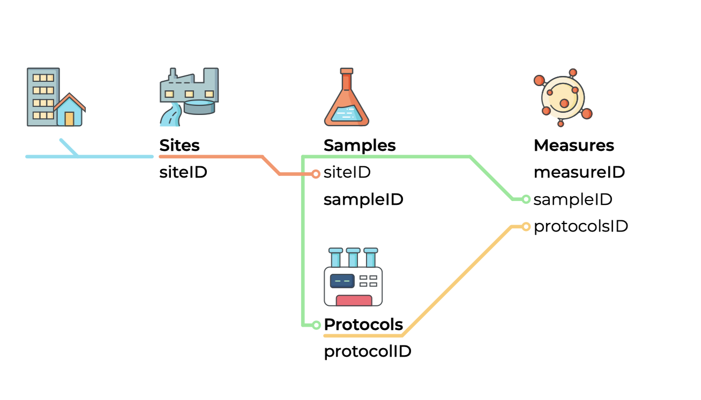
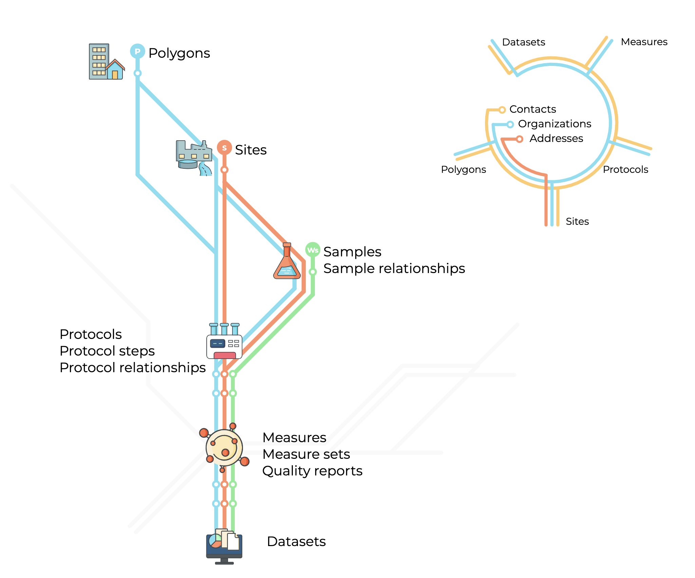

Public Health Environmental Surveillance Open Data Model (PHES-ODM) Documentation
Introduction
Dictionary v3.0.0 Documentation v2.1.0
Facilitating the Collection and Sharing of High-Quality, Interoperable Environmental Surveillance Data: A Community Open Science Project.
The Public Health and Environmental Surveillance Open Data Model (PHES-ODM or ODM) is an open-source data model and set of tools aimed at promoting global collaboration and use of environment and public health data. The ODM model facilitates interoperable environmental surveillance and research by improving quality reporting data, enhancing data management, and supporting data provenance and sharing.
This documentation is intended for those who want to understand how the ODM model works, its organizational structure, and how to use it effectively for their program. It is also a useful resource for those who currently use a different data dictionary and wish to share their data with a program that uses the ODM. If you need to share your data with another program that uses a different data dictionary, this documentation can help you compare and create a common cross-walk between dictionaries. The ODM starts as a conceptual model that represents real-world processes through data elements and data relationships, which are common to all environmental and public health surveillance systems.
How to use the documentation
There are three document sections, each with a different purpose.1
Getting to know the ODM is oriented to understanding the ODM. This section explains the ODM, its structure, and how the model was designed and developed.
How to use the ODM are step-by-step guides to help you use different aspects of the ODM such as report templates.
Reference is a description of each part of the ODM. It serves as a reference for the other sections, and the definitive record of each part, table and set – along with their attributes.
Future documentation
Tutorials and videos are being develop. Tutorials will help newcomers get started. They will be lessons on how to:
Describe a protocol using protocol tables.
Make wide names and report templates using wide names.
Quick start
You can get to know the ODM by imaging how to record a polymerase chain reaction (PCR) test result for SARS-CoV-2 from a wastewater sample.
1. Get oriented to the ODM tables where you record results

The Sample report table (samples) and the Measure report table (measures) are where you record information about samples and measures.
2. View mandatory and optional data fields in the tables reference guide
You can view mandatory and optional data field here: (samples) and (measures). ‘Mandatory’ means they are fields are needed to ensure interoperablity.
In the ODM, tables are an example of an part. A part name can be identified by its text style like this. The part identifier often follows the part in parenthesis, with a link to the part in the reference section.
So, Sample report table is the part name, and (samples) is the part ID and link to the documentation for that part.
You can find out more about parts on the reference guide section.
3. Try entering example data in ODM Excel templates
Keep in mind, ODM templates are only examples of how to use the ODM dictionary to record data. Templates are available at OSF.io. The ’How to use the ODM” section describes how to enter information into tables.
Storing sample data in an ODM template
A sample (sampleID) is defined as a representative volume of wastewater (or other forms of water or liquid), air, or surface area taken from a site. The sample template stores one sample per row. The Sample report table has seven mandatory fields that are listed in the [reference[(tables.qmd#samples)] for the table.
Storing measure data in an ODM template
A measure (measure) is an observation or measurement of any substance, including biological, physical, or chemical substances, obtained from a specimen such including a site, sample, person, or population. Each measure is stored in the Measures table template as a separate row, following the “long” table format, which is the primary method for storing measures. For example, if you recorded PCR results for two SARS-CoV-2 regions, covN1 and covN2, you would record each measurement on a separate line. Alternatively, you can use a “wide” table format to store multiple measures in a single row or create tables that combine both long and wide headers. The European Union airport template is a hybrid template that exemplifies this (found in the “Airports” folder).
(Video)
4. Next steps
In addition to recording measures from samples, you can also record measures for a specific site, such as wastewater flow rate (flowRate), or the population served by the site, such as the Covid-19 hospitalization rate for a wastewater treatment plant’s wasteshed or municipality. Figure 2 illustrates the these three types of measurements: sample, site, and population.
The “who, where, and why” of these measurements is stored in contact tables, while the “how,” which refers to the measurement protocol or method, is stored in the protocols tables.

Getting help
We hope that the documentation serves its purpose and that you find it useful in figuring out how to best use the ODM and its suite of tools. If you do encounter any issues or questions that do not seem to have an easy answer, please create an issue on our GitHub repository or consult our Discourse page.